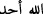
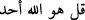
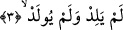
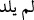
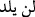
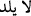

bir şekilde tek başınayken bu ismi bin defa zikreden kimsede kuvvet ve zaafına göre
acâib haller zuhûr eder.
Samed isminin husûsiyeti ise hayır ve salâhın husûle gelmesidir. Her kim onu seher
vaktinde yüz yirmi beş defa zikrederse, üzerinde sıdk ve sıddîkiyyet eserleri zuhûr eder.
“el-Lüm‘a” kitabında şöyle geçer: “Bu ismi zikreden zikrettiği müddetçe açlığın
elemini hissetmez. Vasl ile okunduğunda, tenvinli ve iltikâ-i sâkineynden dolayı kesreli
okunur. Rivâyetlerin çoğunda Ebû Amr, “
”de susar. Arapların bu gibi yerlerde
vâsıl yapmadığını düşünmüştür. Kendisinin şöyle dediği rivâyet olunur: Vasıl ile
okumak sonradan ihdâs olunmuş bir kırâattir. Bir rivâyette de şöyle demiştir: Kârîlerin
böyle okuduğunu gördüm:
. Eğer vâsıl yaparsan tenvinli okursun. Başka bir
rivâyette de şunları söyler: Âyet sonlarında durmayı tercih ederim. Çünkü her bir âyet
sonrakinden bağımsız olup müstakil mânâya sâhiptir. Âyet fâsıladır, zaten bundan dolayı
da âyet diye isimlendirilmiştir.
3. O, doğurmamış ve doğmamıştır.
Sonra yukarıdaki hükümlerin tahtında münderiç olan bazı cüz’î ahkâmı zikretti.
Melekler ve Mesîh hakkında iftirâ atanların iddiâlarının çürüklüğünü ortaya koymak
sadedinde “__WORD__ denildi. “Kimseyi doğurmadı, doğurmamıştır.” Bunun için de nefy, “
/
” şeklinde gelecek zaman sîgasında değil de mâzî sîgasında geldi. Yâni
O’ndan çocuk sâdır olmadı, demektir. Çünkü O’nun cinsinde olan bir varlık yoktur ki,
kendi cinsinden bir eş olsun da çocuk dünyaya gelsin. Ya da kendine yardım edecek
veya halef olacak herhangi bir şeye ihtiyâç duymaz. Çünkü ihtiyâç ve fânîlik Allah -
sübhânehû ve Teâlâ- için imkânsızdır.
“Neden Allah Teâlâ bu sûrede “baba olmadı” derken Benî İsrâil sûresinde “çocuk
edinmedi” (İsra, 111) demektedir” diye sorarsan derim ki: Hrıstiyanlar iki gruptur.
Bazıları “İsâ gerçekten Allah’ın oğludur” derler ki, bu sûredeki red onlaradır. Bazıları
ise Allah Teâla’nın İbrâhim (a.s.)’ı müşerref kılmak için halîl/dost edinmesi gibi İsâ
(a.s.)’ı müşerref kılmak için de onu evlad edindiğini söylerler ki, “çocuk edinmedi”
ifâdesi onları reddetmektedir.
“Kimseye evlâd olmadı” Hiçbir şeyden sudur etmedi. Çünkü gerek öncesinde gerek
sonrasında kendine adem/yokluk nisbet etmek muhâldir. Bazıları demişlerdir ki:
Babalık ve çocukluk ancak misliyyet/benzerlik ile mümkün olur. Çocuk baba gibi
olmalıdır. Hâlbuki onun vâcip hüviyyeti ile bizim mümkün hüviyyetimiz arasında bir
misliyyet/benzerlik yoktur.
Baklî demiştir ki: O, hâdis/sonradan olan şeylerin mahalli olmadığı gibi hâdis olan
şeyler de onun mahalli olmadı, demektir. Onlar böyle bir şeyi kabul ve îtirâf ettikleri